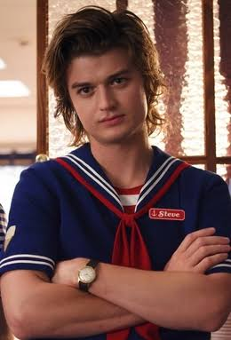

Hawkins character file
Steve Harrington
A former Hawkins High popular kid who becomes one of the group’s most dependable protectors.
- Character profile
- Hawkins, Indiana
- Seasons 1–4
Steve begins as a familiar high-school figure, but his loyalty and willingness to protect younger friends make him an unexpected hero of Hawkins.
Quick facts
- Portrayed by
- Joe Keery
- Home
- Hawkins, Indiana
- First appearance
- Season 1
- Known for
- Protecting his friends
- Work
- Scoops Ahoy; Family Video
- Nickname
- “The Hair”
Biography
Steve Harrington is introduced as a popular student at Hawkins High School. Early in the series, his relationship with Nancy Wheeler draws him into the strange events surrounding Hawkins.
Over time, Steve grows into a trusted member of the group. He develops a close friendship with Dustin Henderson, helps the younger characters in dangerous situations, and works alongside Robin Buckley at Scoops Ahoy and later Family Video.
Despite having no supernatural powers, Steve regularly steps forward when friends are in danger. His character arc emphasizes growth, responsibility and friendship.
Personality traits
- Brave — steps into dangerous situations to protect others.
- Loyal — stays with his friends even when the odds are against them.
- Protective — often acts like an older brother to the younger group.
- Humorous — uses jokes and banter to lighten tense moments.
- Maturing — learns to move beyond his earlier image and mistakes.
Relationships
- Dustin Henderson: A close friendship built on trust, advice and shared danger.
- Robin Buckley: His coworker and trusted friend.
- Nancy Wheeler: His former girlfriend; they continue to care about each other.
- The younger group: People he frequently looks after during crises.
Why this character matters
Steve represents personal growth in the series: someone without special abilities can still become a hero through courage, kindness and teamwork.
Spoiler note — click to reveal (through Season 4)
In Season 4, Steve joins the group investigating the danger tied to Vecna and enters the Upside Down, where he is attacked by demobats.